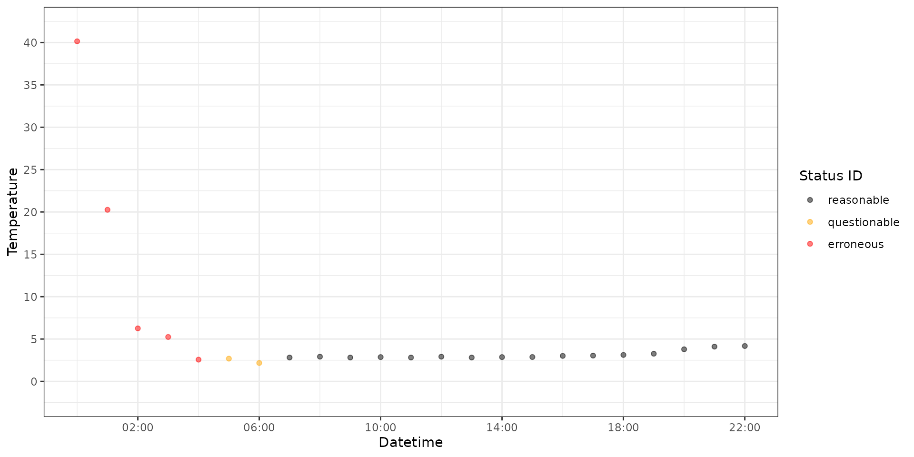

Classify water temperature values
classify-water-temp.RmdRaw logger temperature time series data can be run through
classify_water_temp_data() to classify each value as
reasonable, questionable, or erroneous. Only a single deployment can be
classified at a time. Users are responsible for ensuring that the data
are in the correct format before running this function.
The values are classified following these rules:
- If the temperature is greater then or equal to or less then or equal
to the min and max parameters (
questionable_min,questionable_max,erroneous_min,erroneous_max). - If the rate of change (degrees per hour) between the adjacent lag
value is greater then or equal to the rate parameters
(
questionable_rate,erroneous_rate). - A value adjacent to a questionable/erroneous value are coded as questionable/erroneous.
- A time buffer (hours) is added to the questionable/erroneous values
such that adjacent values within or equal to the buffer
(
questionable_buffer,erroneous_buffer) are coded as questionable/erroneous. - Reasonable values identified between questionable or erroneous
values are coded as questionable if the gap between the nearest
questionable or erroneous value is less then or equal to the
gap_rangeparameter. 6 If a temperature value is missing the function will ignore the value and not classify it.
Usage
data <- tibble::tribble(
~temperature_date_time, ~water_temperature,
"2021-05-07 00:00:00", 40.145,
"2021-05-07 01:00:00", 20.257,
"2021-05-07 02:00:00", 6.257,
"2021-05-07 03:00:00", 5.245,
"2021-05-07 04:00:00", 2.567,
"2021-05-07 05:00:00", 2.687,
"2021-05-07 06:00:00", 2.175,
"2021-05-07 07:00:00", 2.817,
"2021-05-07 08:00:00", 2.917,
"2021-05-07 09:00:00", 2.817,
"2021-05-07 10:00:00", 2.867,
"2021-05-07 11:00:00", 2.817,
"2021-05-07 12:00:00", 2.917,
"2021-05-07 13:00:00", 2.817,
"2021-05-07 14:00:00", 2.867,
"2021-05-07 15:00:00", 2.877,
"2021-05-07 16:00:00", 3.012,
"2021-05-07 17:00:00", 3.045,
"2021-05-07 18:00:00", 3.124,
"2021-05-07 19:00:00", 3.268,
"2021-05-07 20:00:00", 3.789,
"2021-05-07 21:00:00", 4.104,
"2021-05-07 22:00:00", 4.178
) |>
dplyr::mutate(
temperature_date_time = as.POSIXct(temperature_date_time, tz = "UTC")
)
classified_data <- classify_water_temp_data(data)
classified_data
#> # A tibble: 23 × 3
#> temperature_date_time water_temperature status_id
#> <dttm> <dbl> <ord>
#> 1 2021-05-07 00:00:00 40.1 erroneous
#> 2 2021-05-07 01:00:00 20.3 erroneous
#> 3 2021-05-07 02:00:00 6.26 erroneous
#> 4 2021-05-07 03:00:00 5.24 erroneous
#> 5 2021-05-07 04:00:00 2.57 erroneous
#> 6 2021-05-07 05:00:00 2.69 questionable
#> 7 2021-05-07 06:00:00 2.17 questionable
#> 8 2021-05-07 07:00:00 2.82 reasonable
#> 9 2021-05-07 08:00:00 2.92 reasonable
#> 10 2021-05-07 09:00:00 2.82 reasonable
#> # ℹ 13 more rows
ggplot(classified_data) +
geom_point(
aes(
x = temperature_date_time,
y = water_temperature,
color = status_id
),
alpha = 0.5
) +
labs(
y = "Temperature",
x = "Datetime"
) +
theme_bw() +
scale_x_datetime(
breaks = date_breaks("4 hour"),
labels = date_format("%H:%M")
) +
scale_y_continuous(
breaks = seq(-5, 45, 5),
limits = c(-2, 42)
) +
scale_color_manual(
"Status ID",
values = c(
"reasonable" = "black",
"questionable" = "orange",
"erroneous" = "red"
)
)
Changing temperature min and max parameters
classify_water_temp_data(
data,
questionable_max = 1,
erroneous_max = 20
)
#> # A tibble: 23 × 3
#> temperature_date_time water_temperature status_id
#> <dttm> <dbl> <ord>
#> 1 2021-05-07 00:00:00 40.1 erroneous
#> 2 2021-05-07 01:00:00 20.3 erroneous
#> 3 2021-05-07 02:00:00 6.26 erroneous
#> 4 2021-05-07 03:00:00 5.24 erroneous
#> 5 2021-05-07 04:00:00 2.57 erroneous
#> 6 2021-05-07 05:00:00 2.69 questionable
#> 7 2021-05-07 06:00:00 2.17 questionable
#> 8 2021-05-07 07:00:00 2.82 questionable
#> 9 2021-05-07 08:00:00 2.92 questionable
#> 10 2021-05-07 09:00:00 2.82 questionable
#> # ℹ 13 more rowsChanging rate of change parameters
classify_water_temp_data(
data,
questionable_rate = 1,
erroneous_rate = 10
)
#> # A tibble: 23 × 3
#> temperature_date_time water_temperature status_id
#> <dttm> <dbl> <ord>
#> 1 2021-05-07 00:00:00 40.1 erroneous
#> 2 2021-05-07 01:00:00 20.3 erroneous
#> 3 2021-05-07 02:00:00 6.26 erroneous
#> 4 2021-05-07 03:00:00 5.24 erroneous
#> 5 2021-05-07 04:00:00 2.57 erroneous
#> 6 2021-05-07 05:00:00 2.69 questionable
#> 7 2021-05-07 06:00:00 2.17 questionable
#> 8 2021-05-07 07:00:00 2.82 reasonable
#> 9 2021-05-07 08:00:00 2.92 reasonable
#> 10 2021-05-07 09:00:00 2.82 reasonable
#> # ℹ 13 more rowsRemoving the time buffer
classify_water_temp_data(
data,
questionable_buffer = 0,
erroneous_buffer = 0
)
#> # A tibble: 23 × 3
#> temperature_date_time water_temperature status_id
#> <dttm> <dbl> <ord>
#> 1 2021-05-07 00:00:00 40.1 erroneous
#> 2 2021-05-07 01:00:00 20.3 erroneous
#> 3 2021-05-07 02:00:00 6.26 erroneous
#> 4 2021-05-07 03:00:00 5.24 erroneous
#> 5 2021-05-07 04:00:00 2.57 questionable
#> 6 2021-05-07 05:00:00 2.69 questionable
#> 7 2021-05-07 06:00:00 2.17 reasonable
#> 8 2021-05-07 07:00:00 2.82 reasonable
#> 9 2021-05-07 08:00:00 2.92 reasonable
#> 10 2021-05-07 09:00:00 2.82 reasonable
#> # ℹ 13 more rowsRemoving the gap filling
classify_water_temp_data(
data,
gap_range = 0
)
#> # A tibble: 23 × 3
#> temperature_date_time water_temperature status_id
#> <dttm> <dbl> <ord>
#> 1 2021-05-07 00:00:00 40.1 erroneous
#> 2 2021-05-07 01:00:00 20.3 erroneous
#> 3 2021-05-07 02:00:00 6.26 erroneous
#> 4 2021-05-07 03:00:00 5.24 erroneous
#> 5 2021-05-07 04:00:00 2.57 erroneous
#> 6 2021-05-07 05:00:00 2.69 questionable
#> 7 2021-05-07 06:00:00 2.17 questionable
#> 8 2021-05-07 07:00:00 2.82 reasonable
#> 9 2021-05-07 08:00:00 2.92 reasonable
#> 10 2021-05-07 09:00:00 2.82 reasonable
#> # ℹ 13 more rowsProcess
- Read in a logger file
- Create date time column and name it
temperature_date_time - Ensure the temperature column is named
water_temperature - Confirm data is from a single deployment
- Run data through
classify_water_temp_data()function - Save data to a csv file
# install.packages("tidyverse")
# install.packages("devtools")
# devtools::install_github("poissonconsulting/teckfish")
library(teckfish)
library(tidyverse)
# read in logger file
data <- readr::read_csv("path/to/file.csv")
# create date time column
data <- data |>
dplyr::mutate(
temperature_date_time = as.POSIXct(temperature_date_time, tz = "UTC")
)
# ensure temperature column is named water_temperature
data <- data |>
dplyr::rename(
water_temperature = temperature
)
# confirm data is from a single deployment
data <-
data |>
dplyr::filter(
deployment_id == "12345"
)
# run data through classify_water_temp_data() function
classified_data <- classify_water_temp_data(data)
# save data to a csv file
readr::write_csv(classified_data, "path/to/file.csv")